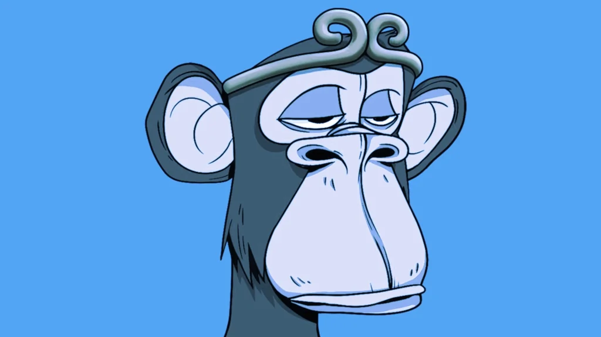

The Bored Ape Yacht Club (BAYC) NFT collection announced Tuesday that it donated $1 million to the country of Ukraine’s official Ethereum wallet address.
The NFT collection’s Twitter account shared the information along with an Etherscan transaction link showing that it sent 388.999 ETH (a little over $1 million) after being inspired by its community members’ contributions.
NFTs are unique tokens that exist on a blockchain such as Ethereum and signify ownership of an asset. The BAYC was among the first NFT collections to reach a floor price—or minimum "buy-now" price per NFT—of over 50 ETH.
Since then, the BAYC has become a cultural symbol in the NFT space, with celebrities like Eminem, Steph Curry, Jimmy Fallon, and many others “aping” into the collection.
Currently, the BAYC is the second-largest NFT collection of all time based on marketplace OpenSea’s rankings, having registered over 417,000 ETH ($1 billion) in secondary sales.